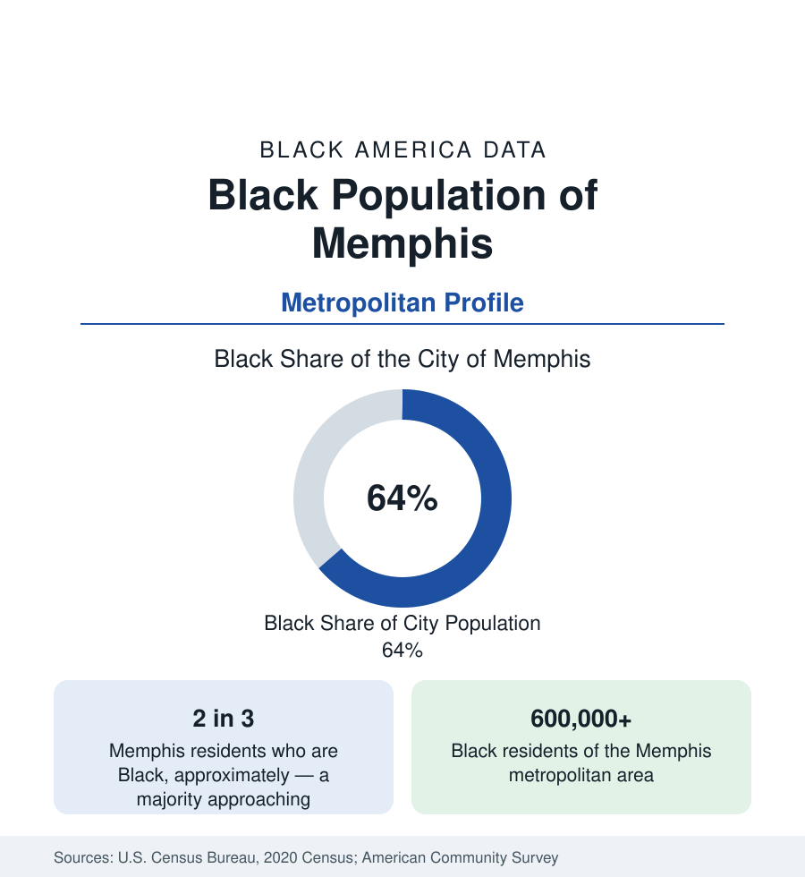

Black Cities
Black Memphis: The Bluff City's Majority
Nearly two-thirds of Memphis is Black — the deepest Black majority of any large Southern city — and the metro holds more than 600,000 Black residents. The census profile.

Memphis is the South's great Black-majority city: roughly 64 percent of its 633,000 residents are Black, the deepest majority of any large city in the South and second among big cities nationally only to Detroit. The metropolitan area, reaching into Mississippi and Arkansas, holds more than 600,000 Black residents, close to half its population. Memphis's Black community built one of the nation's defining musical cultures, a historic freedom-movement geography, and a modern logistics economy — and its neighborhoods record some of the most difficult economic data in this reference. This article profiles the population in the census record.
Beale Street and the Making of Black Memphis
Memphis's Black population was built on the river: cotton commerce, the railroads, and the lumber and levee economies drew Black workers from the Delta and the Tennessee countryside into the city from the nineteenth century onward. Beale Street became its commercial and cultural capital — home to the nation's first Black millionaire businessman in Robert Church, to the young W.C. Handy, who codified the blues there, and later to the Stax record label in South Memphis, whose studio produced the defining soul catalog of the 1960s from a converted movie theater on McLemore Avenue. Orange Mound, founded as one of the nation's first subdivisions built for and by Black families, remains among the oldest continuous Black neighborhoods in the South. The sanitation workers' strike of 1968 and the assassination of Martin Luther King Jr. at the Lorraine Motel fixed Memphis permanently in the nation's freedom-movement geography — a history the city's data still carries, in a Black majority that achieved durable political power a generation ago.
The Metro: Three States, One Population
The metropolitan statistical area crosses the Mississippi River into Arkansas and reaches deep into Mississippi's DeSoto County, one of the fastest-growing suburban counties in the mid-South, where Southaven and Olive Branch hold growing Black populations at suburban income levels. Shelby County itself — city and suburbs together — remains majority Black, a distinction few urban counties in America share. Within the city, the Black geography is nearly comprehensive: North Memphis, South Memphis, Whitehaven (long a center of Black middle-class homeownership), Frayser, and Hickory Hill all record large Black majorities, while the region's affluence concentrates in the eastern suburbs of Germantown and Collierville, whose Black shares remain small — the metro's internal divide drawn in the census tracts as sharply as in any profile in this section.
The Logistics Economy
Memphis's economic engine — the world's second-busiest cargo airport and the FedEx superhub, the river port, the rail junctions, and the warehousing belt — employs Black Memphians at every level but concentrates them in the transportation and material-moving occupations whose profile the employment section records nationally. The survey data show the consequence in the city's numbers: Black median household income in Memphis runs below the national Black figure, educational attainment trails it, and poverty rates in the city's Black neighborhoods rank among the highest of any large city in this reference — a working population central to a globally critical industry whose wages have not matched its strategic importance. LeMoyne-Owen College, the city's HBCU, the University of Memphis, and the medical district anchored by St. Jude Children's Research Hospital and the University of Tennessee Health Science Center form the counterweight institutions.
Reading the Memphis Numbers
Change and the Present Count
The city's population has declined slowly across recent censuses — from about 650,000 to the present 633,000 — even as the metro area grows, a pattern driven by suburbanization into DeSoto County and Shelby County's eastern ring rather than by regional departure. The Black population follows the same form: the city's Black count holds near its level while the metro's rises, so that Memphis's Black majority, at nearly two-thirds of a slightly smaller city, remains the most complete of any large Southern city in the data.
Memphis is the profile that tests whether majority status changes the statistical story — and on the evidence, only partly. Political and cultural mainstream status is complete: this is a city whose government, institutions, and public culture are Black-led as a matter of demography. The economic data, by contrast, track the national Black pattern more than they escape it, because the city's industry mix and its region's wage structure bind it. The number that holds both truths is the metro figure: 600,000 Black residents, half a metro, in the city where the Delta's population came to town.
More in Black Cities
Black Atlanta: Population, Distribution, and Growth of a Black Metropolis
Metro Atlanta holds more than two million Black residents — roughly one in three, second only to New York. The suburban distribution, migration history, and composition of Black Atlanta in the census data.
Black New York: The Largest Black Population in America
The New York metropolitan area holds about 3.4 million Black residents — more than any metro in the nation — and the city itself about two million. The census profile.
Black Washington: The District and the Metro
The Washington metro holds about 1.6 million Black residents, and the District itself — long a majority-Black city — now records a Black share near 41 percent. The census profile.
Source: U.S. Census Bureau, 2020 Census; American Community Survey; Population Estimates Program.